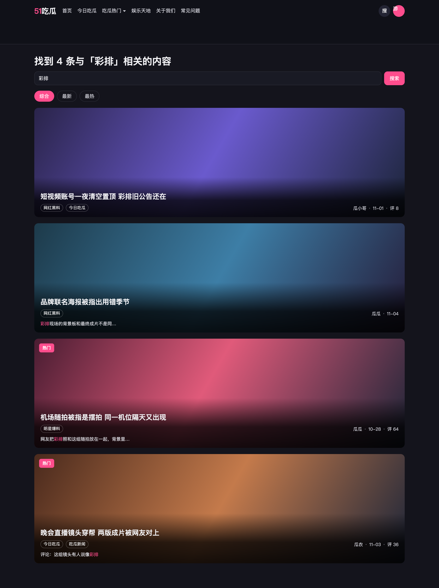
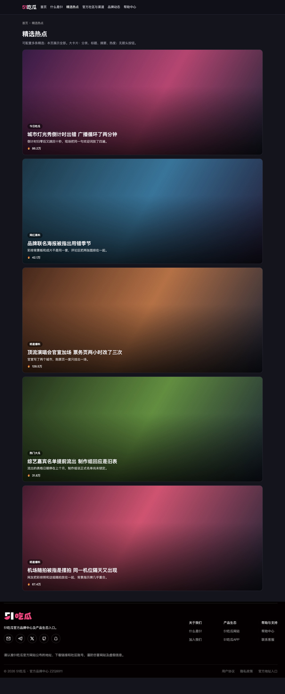
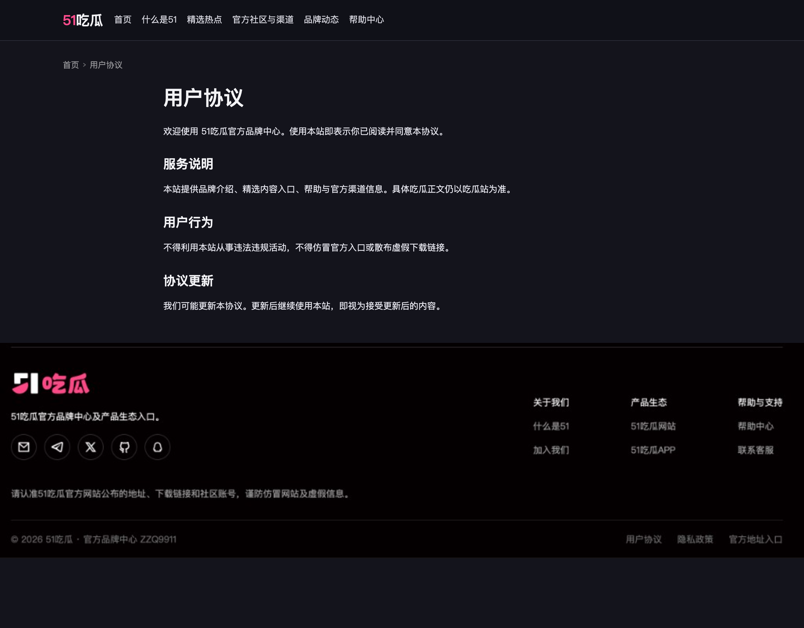
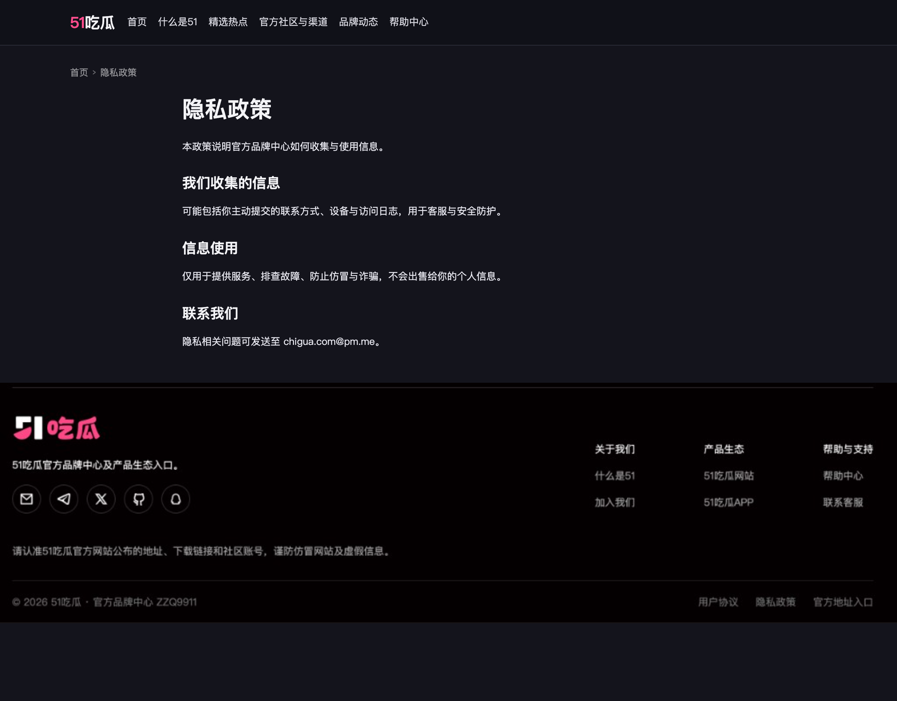
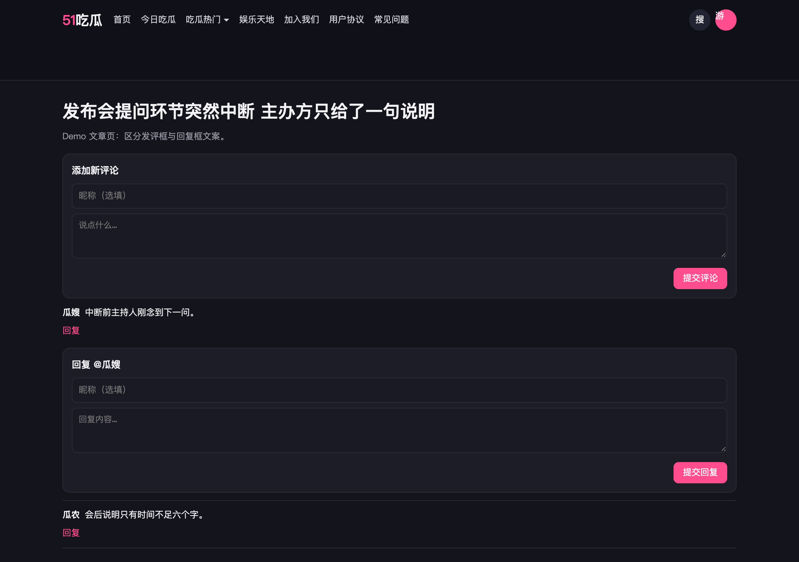
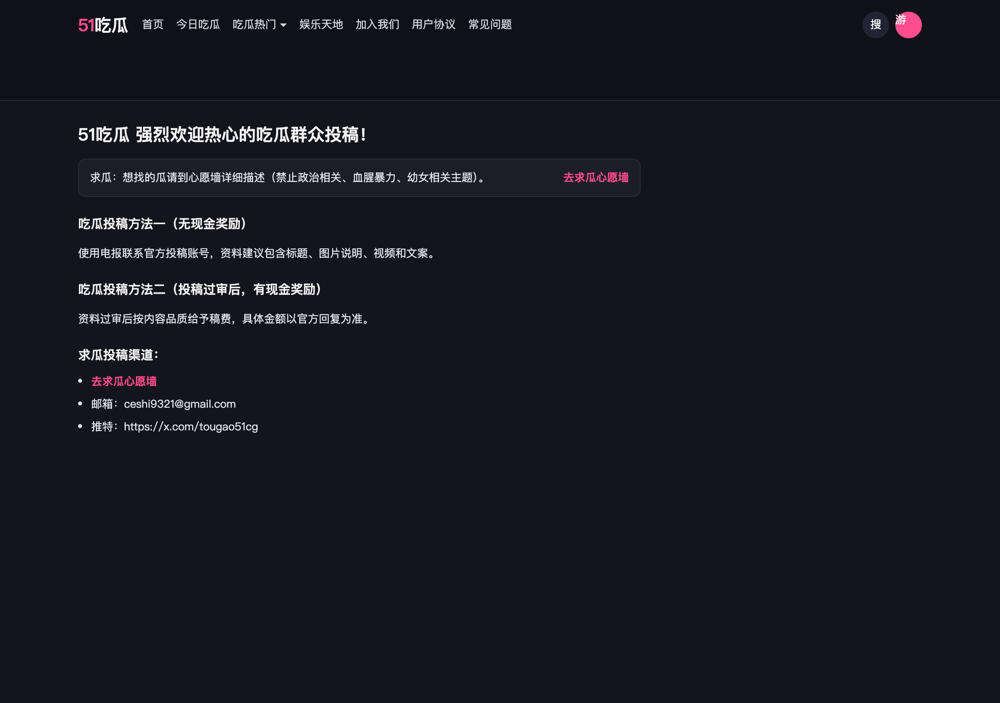

51吃瓜 · 首页卡片、搜索、说明页与品牌中心入口
版本目的 / 需求背景
首页卡片把作者、长日期、多个分类和「热门」挤在一行，热门只是红字，评论数看不到。搜索页只有「包含关键字 xxx 的文章」，没有总条数，也不能按最新 / 最热重排；标题对不上关键词时，用户看不出为什么命中。
「加入我们」「用户协议」「隐私政策」现网走了内容页模板，顶部会出广告、页底还有评论。这三页应改成独立页（与常见问题、回家的路同类）：顶部无广告，底部统一「最新地址」，不接评论。
官方品牌中心顶栏「精选热点」现在指向首页锚点 /#featured，只在首页滚动定位，和「品牌动态」「帮助中心」等主菜单独立页不一致。页脚「用户协议」「隐私政策」跳到吃瓜站外链，品牌中心没有自己的协议页。
桌面走查又收出一批路径问题：搜完不能在结果页改词续搜；短剧回复框和发评框标题撞车；求瓜投稿页仍按旧口径把人往评论区赶，和已上线的「求瓜心愿墙」脱节。
本期做：重排首页与搜索结果卡片；搜索展示总条数，并提供综合、最新、最热；标题未命中时给出摘要；吃瓜站「加入我们」「用户协议」「隐私政策」改为「正文在前、最新地址在后、无评论、无正文前广告」；品牌中心「精选热点」改为独立二级页；品牌中心用户协议与隐私政策做成独立页；搜索结果页（含空态）保留可编辑搜索框并回填关键词；短剧回复框与发评框文案区分；求瓜投稿页引导改为进入「求瓜心愿墙」。
本期不做：栏目下拉当前选中态；标签页三级面包屑；搜索无结果空态改版以外的检索能力（分词、词序无关匹配）；文章详情整页改版；把评论数做成第二个封面角标；为说明页补评论或补顶部广告；重做品牌中心首页信息架构；短剧选集模型；找回密码。首页原有分页、分类频道仍在，卡片只改信息结构。
业务对象：来吃瓜的读者，浏览品牌中心的用户，以及维护说明页、精选内容和协议文案的运营。预期：扫卡片能分清热门、时间和讨论热度；搜索能知道有多少条、为什么是这条，并能在结果页继续改词；打开说明页先看到正文；从主菜单进精选和协议时落到独立页；求瓜、回复路径不易走错。
需求功能矩阵
| 功能ID | 模块 | 名称 | 描述 |
|---|---|---|---|
| FC-01 | 列表 | 首页与搜索卡片 | 底部两行：标题；第二行左侧先「热门」胶囊（若有）再分类标签，右侧作者、短日期、评 N。封面区不再另放热门角标。 |
| FC-02 | 搜索 | 条数与排序 | 标题写找到 N 条。排序为综合、最新、最热，默认综合。综合按标题、正文、评论、标签的相关度从高到低。 |
| FC-03 | 搜索 | 命中摘要 | 搜索结果里，标题 / 标签 / 正文摘要 / 评论摘要中的关键词用主题色标出；标题已命中则不加摘要行。 |
| FC-04 | 搜索 | 结果页续搜 | 有结果与无结果页均保留搜索框并回填本次关键词，可直接改词再搜。 |
| FC-05 | 说明页 | 加入我们与协议页 | 吃瓜站「加入我们」「用户协议」「隐私政策」改走独立页模板（非内容页），无顶部广告、无评论；底部与「回家的路」「常见问题」一致。 |
| FC-06 | 品宣官网 | 精选热点独立页 - 品宣官网 | 顶栏进独立页；列表用大卡片（无箭头）；可配多条，首页区块只展示前 3 条。 |
| FC-07 | 品宣官网 | 协议独立页 - 品宣官网 | 品宣独立页；正文与主站用户协议 / 隐私政策相同，页脚入口不再跳主站。 |
| FC-08 | 互动 | 回复框文案 | 回复某条评论时，回复区标题为「回复 @昵称」，含「昵称（选填）」与正文，按钮为「提交回复」，与上方发评框区分。 |
| FC-09 | 投稿 | 求瓜引导心愿墙 | 求瓜投稿页两处提供「去求瓜心愿墙」（求瓜提示旁；求瓜投稿渠道列表内，与邮箱、推特同级），点击进入心愿墙主列表。 |

首页与搜索卡片
功能逻辑
首页信息流和搜索结果使用同一张卡片。封面区只铺图，不在左上角另放热门。封面底部两行：第一行标题；第二行左侧先「热门」胶囊（运营标记时）、再分类标签，右侧作者和时间。搜索命中摘要接在这一行下面，规则见 FC-03。
业务规则
- 封面比例沿用现网 1920×565，宽扁横幅。标题、元信息、分类叠在封面底部，不在封面下方再垫一块等高区域。
- 热门：运营标记为热门时，在第二行左侧、分类标签之前显示红底白字胶囊「热门」。未标记不占位，封面顶部也不再出现热门。
- 热门标记不跟评论数挂钩，也不参与「最热」或「综合」的计算。「最热」按 FC-02 的浏览量排序，综合用 FC-02 的相关度。
- 封面底部固定两行。第一行是标题，最多两行，超出省略。
- 第二行左侧：有热门时先出「热门」，再按文章已挂分类的配置顺序展示描边胶囊标签。现网一篇可以挂到 4 个，也可以更多。这一侧排满后标签换行，不改成纯文字。
- 第二行右侧是作者、短日期、评 N，顺序固定，短日期为月-日，例如 11-05。评论数为 0 时不显示「评 0」。
- 作者、日期、分类、「热门」不再写进同一句灰色小字。
页面交互
- 首页列表顺序沿用现网，按发布时间倒序。
- 卡片点击进入该文现网文章详情。本期不改详情页。
异常
- 封面图加载失败：保留底部信息区与热门/分类标签，封面区用深色底，标题仍完整按两行规则展示。
- 无作者：元信息作者位显示「匿名」。
- 无分类：第二行左侧仅保留「热门」（若有）；右侧仍为作者、短日期、评 N。
数据流转
卡片读标题、作者、发布时间、评论数、分类列表、热门标记。评论数用已对读者可见的评论条数。热门标记由运营字段单独下发。


搜索条数与排序
功能逻辑
提交关键词后进入搜索结果。页头写清总条数，结果用 FC-01 卡片。排序有「综合」「最新」「最热」，进入搜索时默认「综合」。三套排序使用同一批命中文章，切换只改变顺序。
综合看相关度。相关度按关键词出现的位置加分，位置越能代表这篇文章在讲这件事，分越高。分高的排在前面。
业务规则
- 页头文案：「找到 N 条与「关键词」相关的内容」。N 为全部命中条数，不是当前页条数。
- 有分页时，页码条另写「第 A–B 条，共 N 条」。
- 命中范围：标题、正文、标签、已对读者可见的评论。关键词要在该字段里连续出现，不区分大小写。标题、正文、标签、评论任一处命中，文章就进入结果。
- 相关度按位置加分，同一位置无论出现几次只加一次。多个位置同时命中，分值相加。
- 标题命中加 100。正文命中加 50。已可见评论命中加 20。标签命中加 10。标签就是卡片上的分类。
- 待审核、已下架的评论不参与命中，也不加相关度。
- 「综合」：按相关度从高到低。相关度相同，按发布时间从新到旧。
- 「最新」：只按发布时间从新到旧。相关度和浏览量不改变这个顺序。
- 「最热」：按累计浏览量从高到低。浏览量相同，按发布时间从新到旧。评论数、点赞、收藏不计入。
- 卡片上的「评 N」是读者能看到的评论条数，只负责展示。它不参与「最热」排序，也不参与相关度。
- 切换排序回到第 1 页，关键词不变，N 不变。
- 空关键词点搜索：不进入结果页。
页面交互
- 顶栏搜索图标展开输入框。输入后点「搜索」或回车，打开结果并默认选中「综合」。
- 点「综合」「最新」或「最热」立即重排，当前项高亮。
- 结果页续搜见 FC-04：页内搜索框回填关键词，改词再搜仍走本条排序与条数规则。
异常
- 未输入关键词就搜索：Toast「先输入关键词」，停留在当前页，不发请求。
- 搜索接口失败：结果区改为「搜索失败，请再试一次」，保留关键词和输入框，排序不切换。
- 请求返回后关键词已被用户改掉：丢弃这次结果，不覆盖当前输入。
数据流转
请求带关键词、排序和页码。响应给总条数、相关度、浏览量、命中位置和卡片字段。「最热」按浏览量排序。总条数以本次过滤后的全集为准，翻页不重新计数。
命中摘要
功能逻辑
一条结果只要标题、标签、正文或可见评论命中关键词即可出现。凡读者能看见的命中处，关键词都用主题色标出，方便一眼看出为什么排进来。
标题里已经有关键词时，卡片不再加摘要行，但标题正文里的关键词仍要标色。标题没有、正文有时，在第二行下方给一行正文摘要并标色。标题和正文都没有、只有标签命中时，摘要写分类名，分类名里的关键词标色，同时第二行分类胶囊里的命中词也标色。只有评论命中时，摘要摘评论里那一句并标色。
业务规则
- 命中范围与计分位置见 FC-02。摘要只负责说明这条为什么出现，不另算一套相关度。
- 关键词标色：搜索结果卡片上，标题、分类胶囊、正文摘要、评论摘要中出现的关键词，一律用主题色标出（与站点主色一致）。首页列表卡片不标色。
- 标题包含关键词：标题内标色；不展示摘要行。
- 标题不包含、正文包含：摘要截取正文命中处前后约一句，关键词用主题色标出。前后被截断时加省略号。
- 标题和正文都不包含、标签包含：摘要文案为「分类包含「分类名」」，分类名内的关键词用主题色标出；第二行对应分类胶囊内的关键词同步标色。
- 只在可见评论里包含：摘要前加「评论：」，后面截取评论命中处前后约一句，关键词用主题色标出。
页面交互
- 摘要与关键词标色只在搜索结果卡片出现，首页卡片不出现。
异常
- 关键词只命中已下线或不可见正文：不计入 N，不出现在列表。
- 摘要原文超长：仍只保留命中处前后一句，不展开全文。
数据流转
检索在可见内容上完成。摘要与标色由命中位置现算，不另存一份摘要字段。

搜索结果页续搜
功能逻辑
读者进入搜索结果后，经常要加条件或改词。结果页（含无结果）必须能直接改关键词再搜，不必回搜索首页重填。
业务规则
- 有结果页与无结果页均在页头区域展示搜索框。
- 搜索框默认填入本次成功提交的关键词。
- 点「搜索」或回车：用框内当前文案发起新搜索；成功后默认「综合」，条数与排序规则同 FC-02。
- 从结果页点顶栏放大镜回到搜索入口时，输入框同样回填最近一次关键词（与本条一致）。
页面交互
- 进入结果页即可看见已填关键词的搜索框，可编辑。
- 改词后搜索：整页刷新为新结果，页头 N 与关键词同步更新。
异常
- 框内清空后点搜索：Toast「先输入关键词」，停留在当前结果页，不发请求。
- 新搜索失败：按 FC-02 失败文案，保留框内已改关键词。
数据流转
与 FC-02 同一套搜索请求。结果页只是多暴露输入框并回填，不另开接口。
加入我们与协议页
功能逻辑
站内页面分两套模板：内容页与独立页。内容页（吃瓜正文等）顶部会出广告区；独立页不走内容页壳，顶部没有那块广告。底部区域可统一挂「最新地址」等公共块。
「加入我们」「用户协议」「隐私政策」现网误走了内容页，所以会出现正文前广告和页底评论。本期改为独立页：顶部无广告，无评论；底部与现网「回家的路」「常见问题」一致。研发按改模板即可，本条不另做 Demo。
业务规则
- 适用页面（仅此三页）：加入我们、用户协议、隐私政策。
- 三页必须配置为独立页模板，不得再绑内容页模板。
- 独立页：正文前不渲染应用广告墙、导航外链墙或其它导流图。
- 独立页：不提供评论列表，也不提供发表框。
- 底部与现网「回家的路」「常见问题」一致（含「最新地址」等公共块的字段、文案与打开方式），不另起一套。
页面交互
- 从站内入口进入上述三页，整页为独立页，落点在正文标题。
- 底部链接打开方式与「回家的路」「常见问题」现网一致。
异常
- 底部某一地址配置为空：按「回家的路」「常见问题」现网同一套显隐处理。
- 三页仍被配成内容页：视为未达标；上线前改回独立页。不得靠前台「藏广告」糊弄。
数据流转
三页读各自正文。页面类型走独立页。底部公共块与「回家的路」「常见问题」读同一套全站配置。评论与内容页广告位对这三页不请求、不渲染。

精选热点独立页 - 品宣官网
功能逻辑
官方品牌中心顶栏「精选热点」与「品牌动态」「帮助中心」一样，进入本站独立二级页。运营可配置多条精选；独立页按配置顺序展示全部。首页若保留「精选内容」区块，只展示前 3 条，并从顶栏或「查看更多」进入独立页看全部，不再用首页锚点滚动。
业务规则
- 适用范围：官方品牌中心（guanfang51.com）。
- 顶栏文案仍为「精选热点」，属于主菜单一级入口，落地页是独立二级页。
- 落地地址使用独立路径，例如 /featured。不再使用 /#featured 或其它仅在首页滚动的锚点。
- 页头面包屑与品宣其它二级页一致：首页 › 精选热点。「首页」链到品宣官网首页；当前页「精选热点」不可点或点了无跳转。
- 列表用大卡片：通栏封面（可多图拼底），底部叠分类标签、标题、摘要、热度（火焰 + 数值）。卡片上不放箭头或跳转圆钮；整卡可点。
- 支持配置多条精选（大于 3 条亦可）。独立页展示全部；首页「精选内容」区块只取配置顺序的前 3 条。
- 首页区块内「查看更多」或等价入口，与顶栏一样进入该独立页。
- 点击某一条，进入该条现有详情或外链规则，本期不改单条详情形态。
页面交互
- 在任意品牌中心页面点顶栏「精选热点」，整页进入独立页，顶栏该项高亮。
- 打开带旧锚点 /#featured 的链接时，直接跳到独立页 /featured，不再停在首页锚点。
- 浏览器后退从独立页回到进入前的页面。
异常
- 精选列表为空：独立页仍可进入，正文区显示「暂时没有精选内容」；首页区块按空态隐藏或显示同文案（与现网空态策略一致，全站统一一种）。
- 配置不足 3 条：首页区块有几条展示几条；独立页展示全部。
- 单条内容下线或删除：列表不展示该条；已打开的详情按现网不可见处理。
数据流转
独立页与首页区块读取同一份运营精选配置（有序列表）。首页截取前 3 条；独立页取全量。不各维护一份。


用户协议与隐私政策独立页 - 品宣官网
功能逻辑
品牌中心页脚的「用户协议」「隐私政策」各自打开品宣官网本站独立页，不再跳转到主站（吃瓜站）协议地址。版式与品宣其它二级页一致：同一套顶栏、面包屑、统一页脚。
具体内容使用与主站「用户协议」「隐私政策」相同的正文；只是独立做成品宣侧页面承载，读者留在品宣官网内阅读。
业务规则
- 适用范围：官方品牌中心页脚及站内其它指向协议的入口。
- 用户协议、隐私政策各有独立路径，例如 /user-agreement、/privacy。
- 页脚「用户协议」链到品宣本站用户协议页，「隐私政策」链到品宣本站隐私政策页。不再链到 51cg1.com 或其它主站域名。
- 具体内容：与主站用户协议、主站隐私政策正文一致（同一套文案口径）。品宣侧只负责独立成页展示，不另写一套协议条款。
- 顶栏与品宣官网其它二级页同一套；页头面包屑为「首页 › 用户协议」或「首页 › 隐私政策」。「首页」回品宣首页。
- 页面底部使用品宣官网统一页脚（含关于我们 / 产品生态 / 帮助与支持、版权与协议入口），与精选热点等二级页同一套，不另做简化页脚。
- 正文区：先正文，无评论，正文前无广告墙。不强制挂主站「最新地址」块。
页面交互
- 点页脚「用户协议」或「隐私政策」，整页进入品宣本站对应独立页。
- 页内可用顶栏、面包屑或页脚再切到另一份协议 / 回首页，不跳主站。
异常
- 主站协议正文尚未就绪或品宣侧未同步成功：页面可进，正文区显示「内容准备中，请稍后再看」。
- 旧外链书签仍指向主站协议地址：主站协议页可继续保留；品宣新入口只走品宣独立页。
数据流转
品宣两页展示的正文与主站用户协议 / 隐私政策同源（同步或引用同一套配置）。页脚链接写死为品宣本站路径，不读主站外链 URL。

回复框文案
功能逻辑
短剧或文章详情同时存在「发表新评论」和「回复某条评论」时，两处标题与按钮文案必须区分，避免把回复内容填进上方发评框。回复区与发评区一样提供「昵称（选填）」。
业务规则
- 页面上方发评区：标题保持「添加新评论」（或现网等价发评标题），含「昵称（选填）」与正文，主按钮为「提交评论」。
- 点某条评论的「回复」后，在该条下方展开回复区：标题为「回复 @昵称」（此处昵称为被回复评论的作者展示名），字段含「昵称（选填）」与回复正文，主按钮为「提交回复」。
- 回复区「昵称（选填）」与发评区同规则：选填；填写后作为本条回复的展示称呼；留空按现网匿名 / 默认称呼规则。
- 同一时刻只展开一个回复区；点另一条「回复」时，关掉上一个回复区并打开新的（草稿是否保留不在本期）。
页面交互
- 点「回复」：展开对应回复区，焦点落在昵称输入框（若无则落在回复正文）。
- 点「提交回复」：按现网回复提交规则（含昵称字段）；成功后收起该回复区。
异常
- 回复正文为空（含仅空格）：Toast「先写点评论内容」或不提交，文案与现网评论校验对齐；回复区不关。
- 被回复评论已删除：Toast 说明不可回复，关闭该回复区。
数据流转
提交仍走现网回复接口，带父评论 ID。本条只改展示文案与展开位置，不改审核与计数规则。

求瓜引导心愿墙
功能逻辑
求瓜需求应落在「求瓜心愿墙」，不再引导读者去投稿页评论区留言。求瓜投稿页上原先「请在评论区详细描述你要找的瓜」类提示，改为可点入口，一点进入心愿墙。
业务规则
- 求瓜投稿页固定两处增加可点文案「去求瓜心愿墙」（不得再写「去评论区」）：
- 顶部求瓜说明句旁（现网「求瓜：请在评论区…」那一行右侧或句末）。
- 「求瓜投稿渠道：」列表内，与邮箱、推特同级（单独一项渠道，不挂在标题行旁）。
- 两处入口文案、跳转目标相同，均进入心愿墙主列表；路径与 WW-01 一致（顶栏「官方信息」→「求瓜心愿墙」同一落地页）。
- 不在本页滚动到评论表单；投稿方法一 / 方法二及其它说明段落结构可保留，只改求瓜引导。
- 心愿墙内发帖、筛选、搜索规则见心愿墙 PRD（WW-01～WW-03），本条只负责从投稿页导过去。
页面交互
- 点任一处「去求瓜心愿墙」：当前页跳转到心愿墙主列表（同标签页）。
异常
- 心愿墙不可用或路由失败：Toast「求瓜心愿墙暂时不可用」，停留在投稿页。
数据流转
纯前台跳转，不新增接口。落地页与 WW-01 共用。
验收
| 功能ID | 验收标准 |
|---|---|
| FC-01 | □ 封面比例 1920×565 □ 封面顶部无热门角标 □ 热门时第二行左侧「热门」红底白字在分类标签前；非热门不占位 □ 底部两行：标题，以及同一行的热门/分类与作者、月-日、评 N □ 0 条评论不显示 □ 分类按已挂数量全部展示，排满换行 |
| FC-02 | □ 页头为找到 N 条 □ 默认综合，可切最新、最热，三条结果集相同 □ 综合按标题 100、正文 50、可见评论 20、标签 10 相加，同位置只计一次，高分在前，同分按时间 □ 最新只按时间 □ 最热只按累计浏览量，同分按时间 □ 空关键词 Toast「先输入关键词」 |
| FC-03 | □ 标题命中：标题内关键词主题色标出，无摘要行 □ 正文命中：摘要内标色 □ 仅标签命中：摘要「分类包含「分类名」」且分类名与对应胶囊标色 □ 仅评论命中：以「评论：」起头并标色 □ 首页卡片不标色 |
| FC-04 | □ 有结果与无结果页均有搜索框 □ 默认回填本次关键词 □ 改词再搜走 FC-02 □ 空词 Toast「先输入关键词」 |
| FC-05 | □ 「加入我们」「用户协议」「隐私政策」为独立页模板（非内容页）□ 顶部无广告 □ 无评论 □ 底部与现网「回家的路」「常见问题」一致 |
| FC-06 | □ 顶栏进独立路径 □ 旧锚点转到独立页 □ 面包屑为「首页 › 精选热点」□ 大卡片含分类/标题/摘要/热度且无箭头钮 □ 可配多条 □ 首页区块只展示前 3 条 □ 空列表有空态文案 |
| FC-07 | □ 品宣各有独立协议页 □ 页脚不跳主站 □ 正文与主站用户协议 / 隐私政策一致 □ 顶栏/面包屑/统一页脚与品宣二级页一致 □ 无评论、正文前无广告 |
| FC-08 | □ 发评区与回复区标题不同 □ 回复区为「回复 @昵称」□ 回复区有「昵称（选填）」□ 按钮为「提交回复」 |
| FC-09 | □ 顶部求瓜提示旁有「去求瓜心愿墙」□「求瓜投稿渠道」列表内有「去求瓜心愿墙」，与邮箱、推特同级 □ 两处均进心愿墙主列表 □ 不得再写「去评论区」□ 不滚到本页评论表单 |